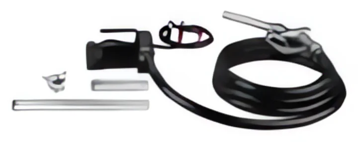

GROZ · Fuel & DEF Handling
Electric Diesel Pumps-V Series
CAT NR DP/12MD/ST · ORD NR 49502
| CAT NR (catalogue number) | DP/12MD/ST |
|---|---|
| ORD NR (order number) | 49502 |
| Box quantity | 4 |
| Base plate | No |
| Discharge hose | Hose 3 m long |
| Drum bung | Yes |
| Lift handle | No |
| Nozzle holder | Yes |
| Nozzle type | Manual |
| Nylon suction strainer | No |
| Pump inlet threaded | 1" |
| Pump outlet threaded | 3/4" HB |
| Suction tube | 2 pc Steel |
Open in the catalogue The catalogue PDF, page 230
From the GROZ Fluid Handling CC-07 catalogue. Not yet verified: these details were read from the printed catalogue automatically; check the catalogue page before ordering.